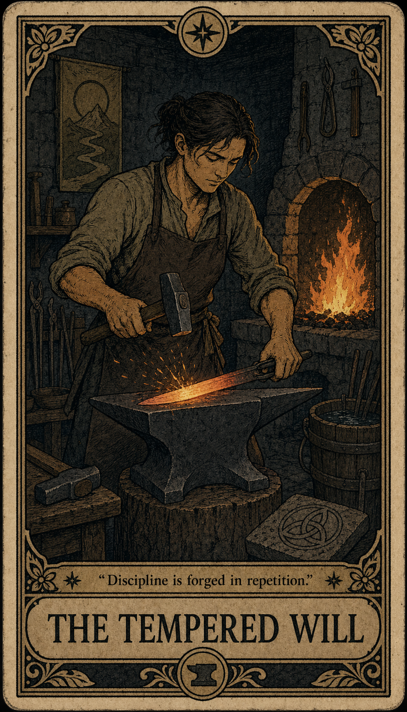
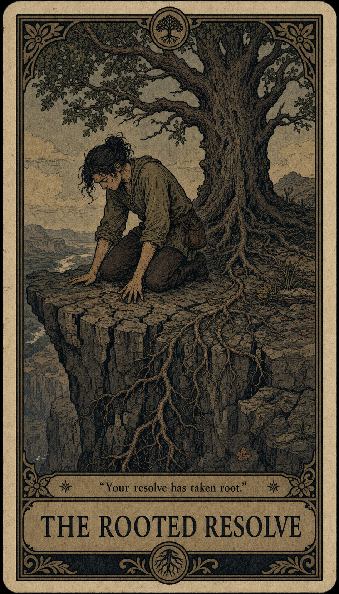
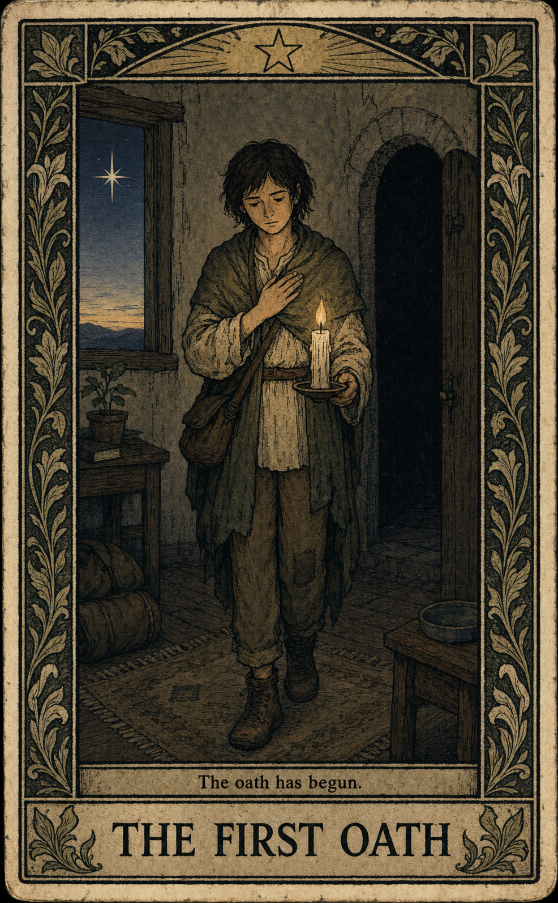
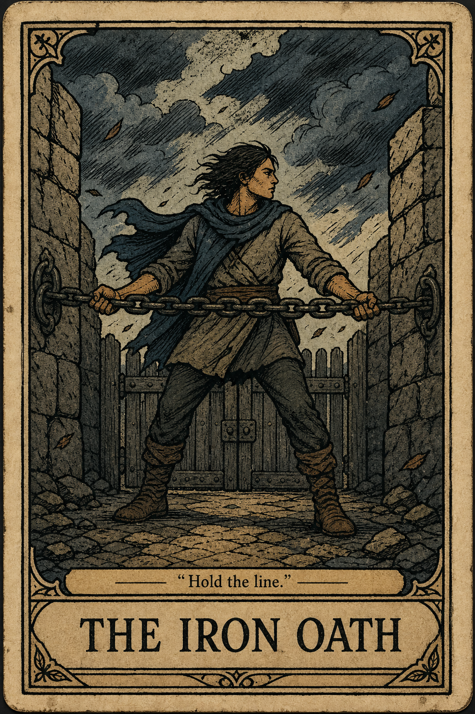
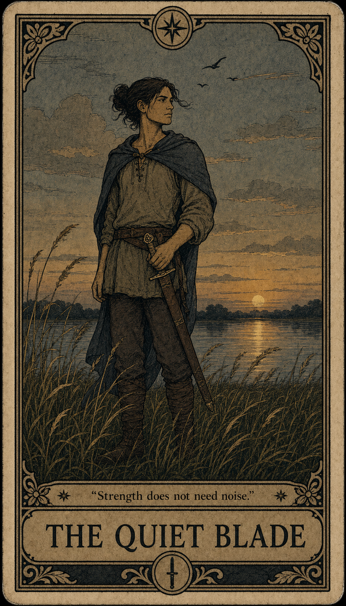
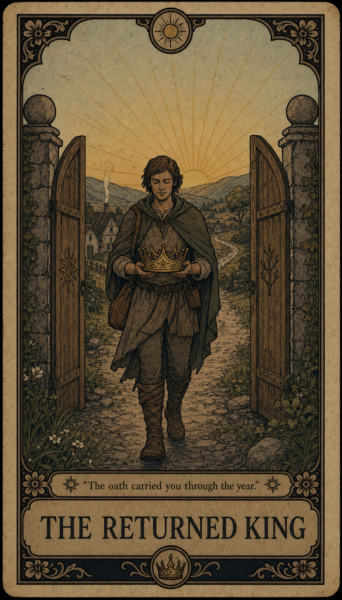

Mark today
One tactile check-in anchors the day without building a sprawling habit dashboard.
RECOVERY AS ARCHETYPAL PROGRESS
Daily Oath turns sobriety into a daily ritual and a symbolic rank journey: lanterns for clarity, bridges for transition, roots through stone for resilience.
One vice. One oath. One honest mark each day.


The experience pairs a vintage recovery tarot deck with a quiet mobile tool: physical, imperfect, symbolic, and still immediately practical.
THE RANK PATH
Each sober milestone unlocks a named recovery archetype. The cards make progress tangible without making recovery feel like performance.

The First Oath
The Iron Oath
The Quiet Blade
The Returned KingAnd many more.
Sixteen recovery archetypes mark the year, each one waiting behind another kept promise. The next card is never just art: it is a quiet reason to return tomorrow and see what kind of strength comes next.
THE APP EXPERIENCE
One tactile check-in anchors the day without building a sprawling habit dashboard.
A 90-second support screen gives the user a reason to continue when the hour gets difficult.
Debrief and recommit without hiding the hard parts. The tone stays firm, human, and non-shaming.
Daily Oath is for people who need recovery to feel concrete: a vow, a mark, a card, a next step.